financialkit: Quantitative Finance in Python#
financialkit is a unified toolkit for quantitative finance, spanning 14 domains, from the time value of money and fixed income to stochastic volatility, credit and market microstructure, under one NumPy-based API. It’s built for finance students working through a textbook problem, curious learners exploring a model on their own, and educators building a demonstration. Under the hood, it calls numpy/scipy directly for anything they already implement (distributions, root finding, optimization and linear programming, quadrature, FFTs, quasi-random sequences, sparse solvers, matrix exponentials, and more). financialkit’s value-add is its own dataclass-result API, docstrings, visualizers, tests, and examples wrapped around those calls, not reinventing numerical primitives that are already correct and well-tested upstream. Algorithms are hand-written only where no numpy/scipy equivalent exists (binomial and trinomial trees, Longstaff-Schwartz, curve bootstrapping, PSOR, the ARMA and GARCH likelihoods, the ADF test with MacKinnon critical values, Ledoit-Wolf shrinkage), or where the iteration itself is the lesson. There is no dependency on pandas, statsmodels, arch or QuantLib, and nothing touches the network: every example runs on seeded synthetic data.

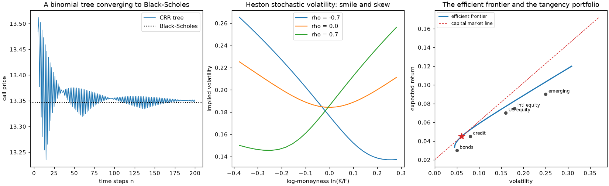
Every subpackage is grounded in the finance it implements, not just coded against it: public functions carry runnable, CI-checked examples, and each subpackage’s history page traces the breakthroughs behind it, from Fibonacci’s present values to the CAPM, Black-Scholes and Heston, each one linked to the code that reproduces it.
In short, financialkit is 14 domains behind one consistent API, plus a history-of-finance narrative in which every milestone links to runnable gallery code. It is closest in spirit to a textbook such as Hull’s Options, Futures, and Other Derivatives or Glasserman’s Monte Carlo Methods in Financial Engineering, but packaged as an importable library.
Important
financialkit is educational and research software, not investment advice. It is not a production pricing, trading or risk system, and nothing in it should be relied on for trading, valuation or regulatory decisions. Each domain is a teaching-depth subset of its field; for production work, use dedicated tools (for example QuantLib, statsmodels, arch or CVXPY) directly.
Foundations
financialkit.time_value– compounding and equivalent rates, present value and NPV, annuities, IRR and MIRR, amortization and the APR, and day-count conventions.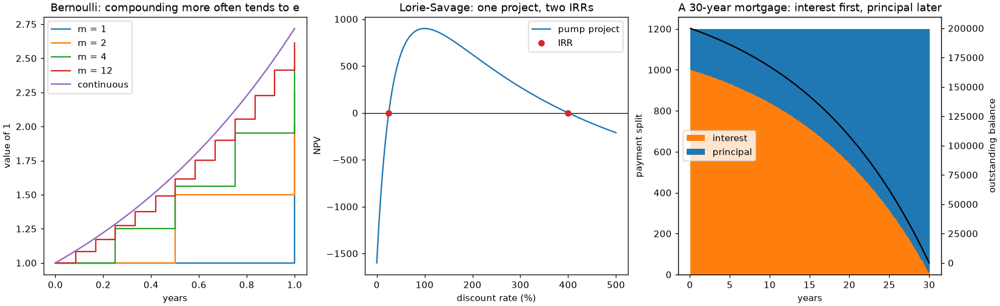
financialkit.fixed_income– bond prices and yields, durations and convexity, bootstrapped, spline, Nelson-Siegel and Svensson curves, immunization, and swaps.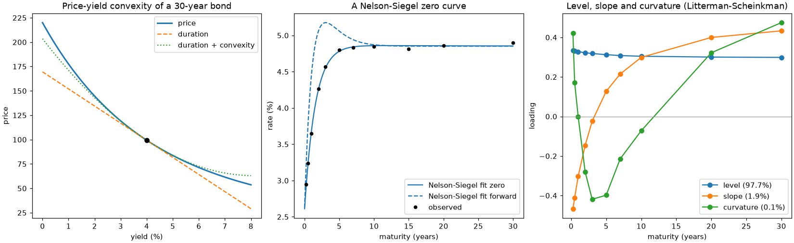


Derivatives
financialkit.options– Bachelier, Black-Scholes-Merton, Black-76 and Garman-Kohlhagen, parity and bounds, the Greeks and delta hedging, implied volatility and the smile, and binomial and trinomial trees.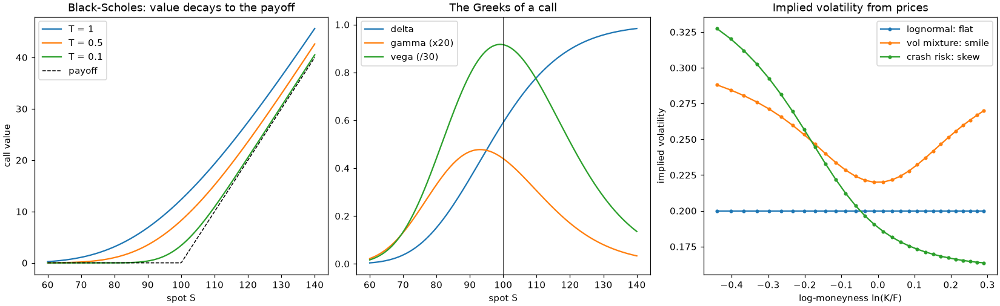
financialkit.exotic_options– barriers, binaries, Asians, lookbacks, variance swaps, compounds, choosers, Margrabe, Stulz and quanto options, and Longstaff-Schwartz.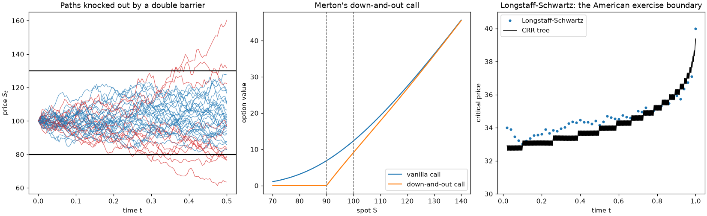
financialkit.stochastic_volatility– local volatility, Heston, jumps and variance gamma, Fourier pricing, SABR and SVI, and Heston simulation.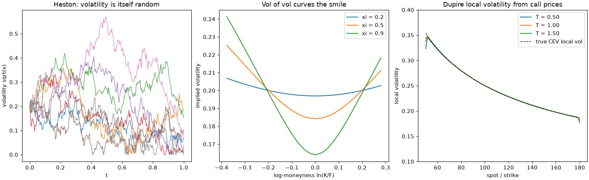


Numerical Methods
financialkit.monte_carlo– crude Monte Carlo with error bars, variance reduction, quasi-Monte Carlo, Monte Carlo Greeks, and multilevel Monte Carlo.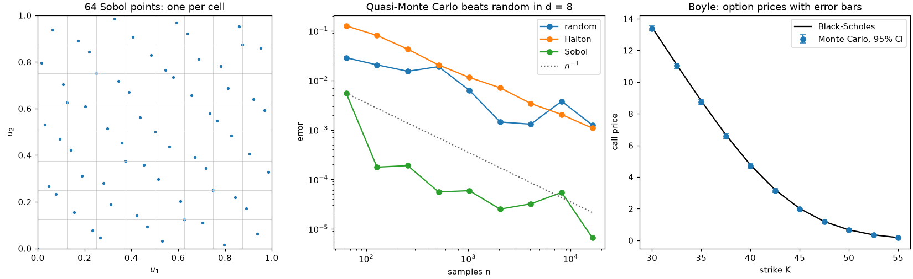
financialkit.pde_methods– explicit, implicit and Crank-Nicolson schemes, stability analysis, American options by PSOR, and two-factor ADI.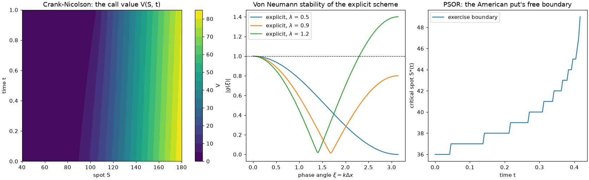


Rates & Credit
financialkit.interest_rate_models– Vasicek, CIR and affine short rates, Ho-Lee, Hull-White, G2++ and Black-Derman-Toy, bond options, caps and swaptions, and HJM.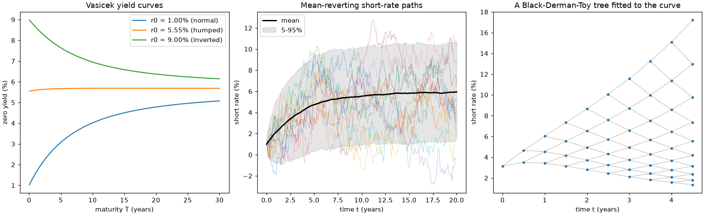
financialkit.credit– structural models and distance to default, hazard curves and CDS, rating migrations, portfolio credit loss, the Basel IRB formula, and CDO tranches.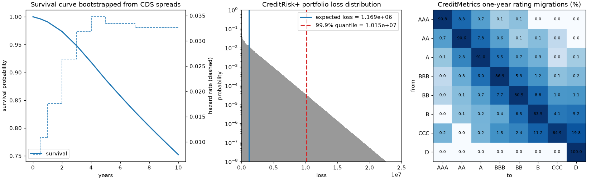


Portfolios & Asset Pricing
financialkit.portfolio– mean-variance frontiers, Kelly and Merton, CPPI, covariance shrinkage, Black-Litterman, CVaR optimization, risk parity and HRP, and performance ratios.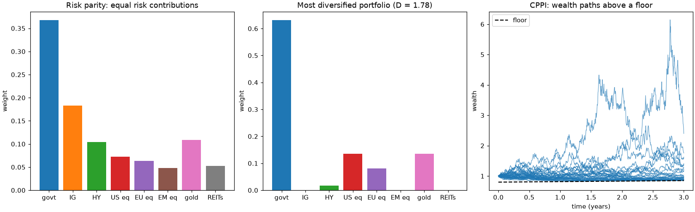
financialkit.asset_pricing– dividend discount models, the CAPM and its tests, factor models and the APT, the consumption CAPM and the equity premium puzzle, and the Hansen-Jagannathan bound.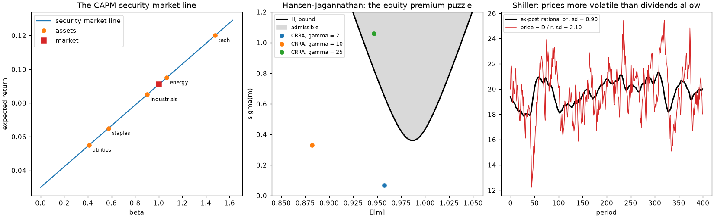


Risk & Markets
financialkit.risk– VaR in all its flavours, expected shortfall, extreme value theory, backtests, copulas, and drawdowns.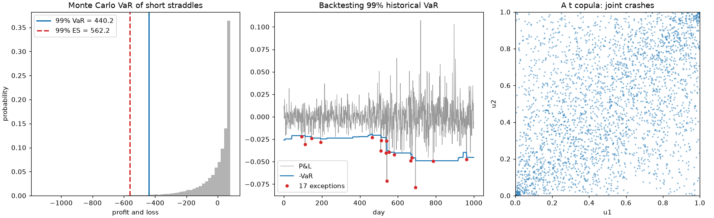
financialkit.time_series– stylized facts, random-walk tests, ARMA, unit roots and cointegration, the Hurst exponent, the GARCH family, and realized volatility.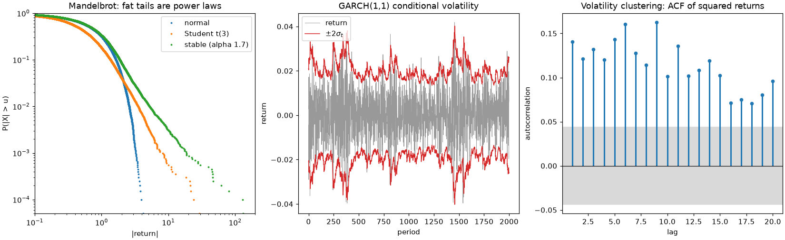
financialkit.market_microstructure– spreads and their estimators, trade classification, dealer models, Kyle and Glosten-Milgrom, PIN and VPIN, price impact, and optimal execution.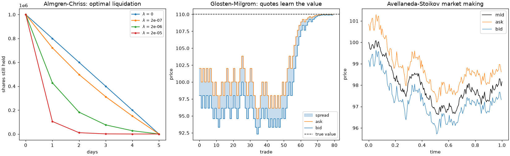


financialkit is part of a family of packages, with mathematicskit, physicskit and chemistrykit, that share the same architecture, API conventions, and history-driven documentation.
Install and try it#
pip install "financialkit[fast]" # with numba JIT acceleration (recommended)
pip install financialkit # pure numpy/scipy/matplotlib, e.g. for Pyodide
The fast extra adds numba, which compiles
the inner loops of integrators, options, interest_rate_models,
monte_carlo, pde_methods and stochastic_volatility. Without it,
those kernels run as plain Python with the same results, only slower.
To try it without installing anything, open the quickstart notebook in Colab or in JupyterLite, or use the JupyterLite button at the top of every gallery example. Every gallery also has a download-all button for its scripts and notebooks. The public API follows a documented stability and deprecation policy.
Five tutorials follow one problem across several domains: One Option, Five Pricers, The Yield Curve, End to End, Where the Smile Comes From, From Returns to Risk and Credit Risk, from One Firm to a Portfolio.
Conventionally imported as fk:
import financialkit as fk
S, K, T, r, sigma = 100.0, 95.0, 1.0, 0.05, 0.2
print(fk.options.black_scholes_price(S, K, T, r, sigma)) # closed form
print(fk.options.CRRTree(1000).price(S, K, T, r, sigma).price) # binomial tree
mc = fk.monte_carlo.european_option_mc(S, K, T, r, sigma, n_paths=200_000, rng=0)
print(mc.estimate, mc.std_error) # Monte Carlo, with its error
Related toolkits
Sibling Python toolkits for learning and teaching, built the same way:
blockchainkit – cryptography, consensus and blockchain systems
chemistrykit – computational chemistry
engineeringkit – computational engineering
mathematicskit – computational mathematics
physicskit – computational physics
tbkit – tight-binding models, band topology and quantum transport